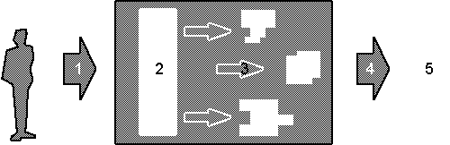

| Datenkörper
Allgemein wird der Datenkörper als Summe aller Datenspuren verstanden, die eine Person auf dem Internet hinterlassenen hat und ständig hinterlässt. Dieser Datenkörper wird durch die Strukturen und Mechanismen des Netzes, vor allem durch die Suchmaschinen kontinuierlich prozessiert und re-prozessiert. Angenommen, dass sich eine Persönlichkeit nicht bei der Person selbst manifestiert, sondern erst bei der Wahrnehmung ihrer durch andere entsteht, kann man sagen, dass es keine "echte" oder "einzig wahre" Persönlichkeit gibt. sondern viele, durch unterschidliche Rezeption entstandenen, gleichwertige Persönlichkeiten einer Person die sich verändern je nach dem wie, und von wem diese Person wahrgenommen wird. Diese Überlegung ist wichtig für das Verständnis des Databody. Jede BenutzerIn einer Suchmaschine, die/der Informationen zu einer Person sucht (ob das nun Mensch oder Maschine sei) konstruiert die Persönlichkeit des Gesuchten aus den gefundenen Teilen des DataBody für sich selbst. Dies geschieht, im Gegensatz zur Realität, vermittelt (mediated) und zeitverschoben. Alte und Neue, relevante und irrelevante Information kann im digitalisierten Zustand oft nicht einfach voneinander unterschieden werden. Wenn man beispielsweise mit dem Namen einer Person eine Suchanfrage an eine Suchmaschine startet, kann es sein, dass im Suchresultat mehrere gleichnamige Personen vermischt vorkommen. Suchresultate variieren auch stark, je nachdem welche Suchmaschine man benutzt um nach demselben Begriff zu suchen. Textinformation kann einfach aus einem Kontext kopiert und in einem neuen Kontext publiziert werden und dieser Kontext wird wiederum von verschiedenen Suchmaschinen verschieden indexiert und dem Suchenden wiederum anders präsentiert. Digitalisierte persönliche Information verändert sich ständig, weil sie ständig durch Suchmaschinen und Surfer, Menschen und Maschinen prozessiert und reprozessiert wird. So wird auch klar, dass es sehr schwierig ist diese Information zu kontrollieren und noch schwieriger, sie zu löschen . 
Legende: 1. Eine Person ist aktiv auf dem Netz (surft, publiziert etc.) 2. Die Person hinterlässt Spuren auf dem Netz (beispielsweise Postings, Newsgroup-Mails, Homepage-Publikationen, Sign-Up-Informationen, etc. ) 3. Diese werden von den Strukturen des Netzes prozessiert (archiviert, gelöscht , kopiert, zitiert, etc.) Diese prozessierte Information ist der Databody. 4. Nur ein Teil davon erscheint als Antwort auf eine Suchanfrage an eine Suchmaschine. 5. Durch die Wahrnehmung wird die Persönlichkeit konstruiert. Zwei wichtige Punkte werden in der Grafik visualisiert: - Die Basis für die Generierung einer Persönlichkeit ist der Databody, welcher zumindest in der Theorie genau definierbar ist, weil er alle Datenspuren beinhaltet, die eine Person je auf dem Netz hinterlassen hat. - Es ist sehr schwierig, den eigenen Datenkörper zu beeinflussen da er ständig von den Mechanismen des Netzes konstruiert und rekonstruiert wird. |